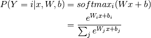
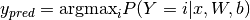
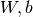
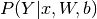
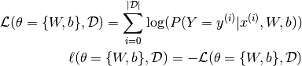
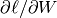
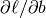
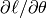

Classifying MNIST digits using Logistic Regression¶
Note
This sections assumes familiarity with the following Theano concepts: shared variables , basic arithmetic ops , T.grad , floatX. If you intend to run the code on GPU also read GPU.
Note
The code for this section is available for download here.
In this section, we show how Theano can be used to implement the most basic classifier: the logistic regression. We start off with a quick primer of the model, which serves both as a refresher but also to anchor the notation and show how mathematical expressions are mapped onto Theano graphs.
In the deepest of machine learning traditions, this tutorial will tackle the exciting problem of MNIST digit classification.
The Model¶
Logistic regression is a probabilistic, linear classifier. It is parametrized
by a weight matrix  and a bias vector
and a bias vector  . Classification is
done by projecting an input vector onto a set of hyperplanes, each of which
corresponds to a class. The distance from the input to a hyperplane reflects
the probability that the input is a member of the corresponding class.
. Classification is
done by projecting an input vector onto a set of hyperplanes, each of which
corresponds to a class. The distance from the input to a hyperplane reflects
the probability that the input is a member of the corresponding class.
Mathematically, the probability that an input vector  is a member of a
class
is a member of a
class  , a value of a stochastic variable , can be written as:
, a value of a stochastic variable , can be written as:

The model’s prediction is the class whose probability is maximal, specifically:

The code to do this in Theano is the following:
Since the parameters of the model must maintain a persistent state throughout
training, we allocate shared variables for . This declares them both
as being symbolic Theano variables, but also initializes their contents. The
dot and softmax operators are then used to compute the vector . The result p_y_given_x is a symbolic variable of vector-type.
To get the actual model prediction, we can use the T.argmax operator, which
will return the index at which p_y_given_x is maximal (i.e. the class with
maximum probability).
Now of course, the model we have defined so far does not do anything useful yet, since its parameters are still in their initial state. The following section will thus cover how to learn the optimal parameters.
Note
For a complete list of Theano ops, see: list of ops
Defining a Loss Function¶
Learning optimal model parameters involves minimizing a loss function. In the
case of multi-class logistic regression, it is very common to use the negative
log-likelihood as the loss. This is equivalent to maximizing the likelihood of the
data set under the model parameterized by  . Let
us first start by defining the likelihood and loss
:
. Let
us first start by defining the likelihood and loss
:

While entire books are dedicated to the topic of minimization, gradient descent is by far the simplest method for minimizing arbitrary non-linear functions. This tutorial will use the method of stochastic gradient method with mini-batches (MSGD). See Stochastic Gradient Descent for more details.
The following Theano code defines the (symbolic) loss for a given minibatch:
Note
Even though the loss is formally defined as the sum, over the data set,
of individual error terms, in practice, we use the mean (T.mean)
in the code. This allows for the learning rate choice to be less dependent
of the minibatch size.
Creating a LogisticRegression class¶
We now have all the tools we need to define a LogisticRegression class, which
encapsulates the basic behaviour of logistic regression. The code is very
similar to what we have covered so far, and should be self explanatory.
We instantiate this class as follows:
We start by allocating symbolic variables for the training inputs and
their corresponding classes  . Note that
. Note that x and y are defined
outside the scope of the LogisticRegression object. Since the class
requires the input to build its graph, it is passed as a parameter of the
__init__ function. This is useful in case you want to connect instances of
such classes to form a deep network. The output of one layer can be passed as
the input of the layer above. (This tutorial does not build a multi-layer
network, but this code will be reused in future tutorials that do.)
Finally, we define a (symbolic) cost variable to minimize, using the instance
method classifier.negative_log_likelihood.
Note that x is an implicit symbolic input to the definition of cost,
because the symbolic variables of classifier were defined in terms of x
at initialization.
Learning the Model¶
To implement MSGD in most programming languages (C/C++, Matlab, Python), one would start by manually deriving the expressions for the gradient of the loss with respect to the parameters: in this case , and , This can get pretty tricky for complex models, as expressions for  can get fairly complex, especially when taking into account problems of numerical stability.
With Theano, this work is greatly simplified. It performs automatic differentiation and applies certain math transforms to improve numerical stability.
To get the gradients and in Theano, simply do the following:
g_W and g_b are symbolic variables, which can be used as part
of a computation graph. The function train_model, which performs one step
of gradient descent, can then be defined as follows:
updates is a list of pairs. In each pair, the first element is the symbolic
variable to be updated in the step, and the second element is the symbolic
function for calculating its new value. Similarly, givens is a dictionary
whose keys are symbolic variables and whose values specify
their replacements during the step. The function train_model is then defined such
that:
- the input is the mini-batch index
indexthat, together with the batch size (which is not an input since it is fixed) defines with
corresponding labels - the return value is the cost/loss associated with the x, y defined by
the
index - on every function call, it will first replace
xandywith the slices from the training set specified byindex. Then, it will evaluate the cost associated with that minibatch and apply the operations defined by theupdateslist.
Each time train_model(index) is called, it will thus compute and return the
cost of a minibatch, while also performing a step of MSGD. The entire learning
algorithm thus consists in looping over all examples in the dataset, considering
all the examples in one minibatch at a time,
and repeatedly calling the train_model function.
Testing the model¶
As explained in Learning a Classifier, when testing the model we are
interested in the number of misclassified examples (and not only in the likelihood).
The LogisticRegression class therefore has an extra instance method, which
builds the symbolic graph for retrieving the number of misclassified examples in
each minibatch.
The code is as follows:
We then create a function test_model and a function validate_model,
which we can call to retrieve this value. As you will see shortly,
validate_model is key to our early-stopping implementation (see
Early-Stopping). These functions take a minibatch index and compute,
for the examples in that minibatch, the number that were misclassified by the
model. The only difference between them is that test_model draws its
minibatches from the testing set, while validate_model draws its from the
validation set.
Putting it All Together¶
The finished product is as follows.
The user can learn to classify MNIST digits with SGD logistic regression, by typing, from within the DeepLearningTutorials folder:
python code/logistic_sgd.py
The output one should expect is of the form:
...
epoch 72, minibatch 83/83, validation error 7.510417 %
epoch 72, minibatch 83/83, test error of best model 7.510417 %
epoch 73, minibatch 83/83, validation error 7.500000 %
epoch 73, minibatch 83/83, test error of best model 7.489583 %
Optimization complete with best validation score of 7.500000 %,with test performance 7.489583 %
The code run for 74 epochs, with 1.936983 epochs/sec
On an Intel(R) Core(TM)2 Duo CPU E8400 @ 3.00 Ghz the code runs with approximately 1.936 epochs/sec and it took 75 epochs to reach a test error of 7.489%. On the GPU the code does almost 10.0 epochs/sec. For this instance we used a batch size of 600.
Prediction Using a Trained Model¶
sgd_optimization_mnist serialize and pickle the model each time new
lowest validation error is reached. We can reload this model and predict
labels of new data. predict function shows an example of how
this could be done.
Footnotes
| [1] | For smaller datasets and simpler models, more sophisticated descent algorithms can be more effective. The sample code logistic_cg.py demonstrates how to use SciPy’s conjugate gradient solver with Theano on the logistic regression task. |